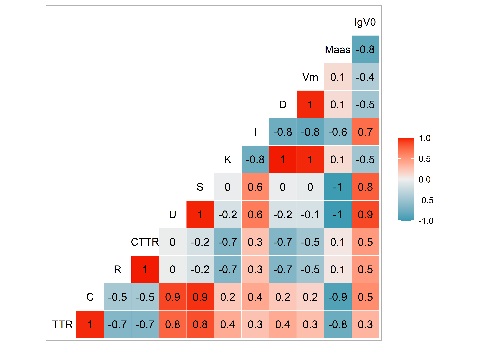
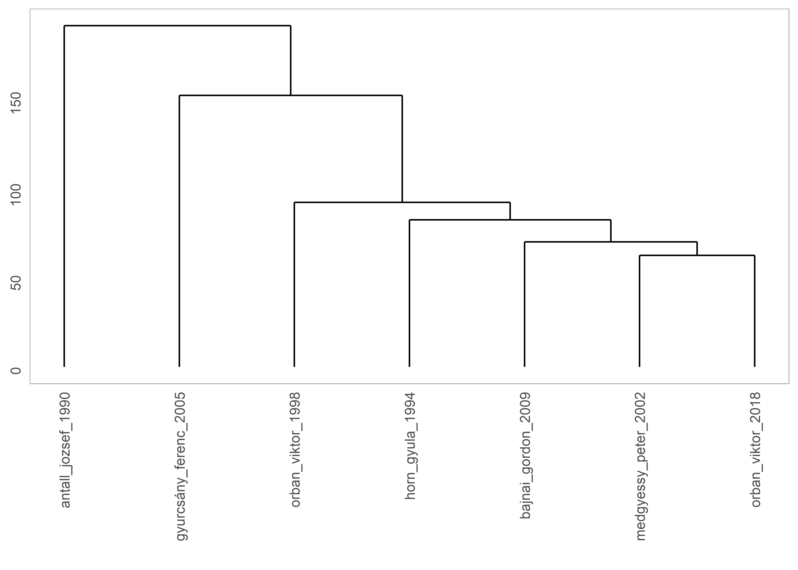
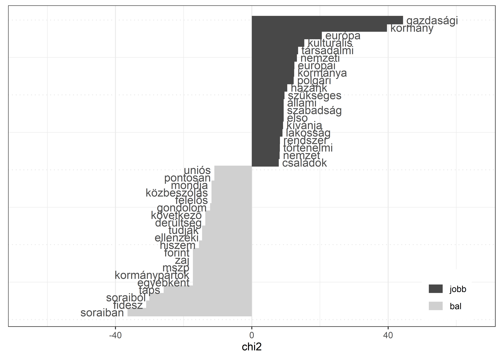

5 Leíró statisztika
5.1 Szövegek a vektortérben
A szövegbányászati feladatok két altípusa a keresés és a kinyerés. A keresés során olyan szövegeket keresünk, amelyekben egy adott kifejezés előfordul. A webes keresőprogramok egyik jellemző tevékenysége, az információ-visszakeresés (information retrieval) során például az a cél, hogy a korpuszból visszakeressük a kereső információigénye szempontjából releváns információkat, mely keresés alapulhat metaadatokon vagy teljes szöveges indexelésen (Russel and Norvig 2005, 742.o; Tikk 2007). Az információkinyerés (information extraction) esetén a cél, hogy a strukturálatlan szövegekből strukturált adatokat állítsunk elő. Azaz az információkinyerés során nem a felhasználó által keresett információt keressük meg és lokalizáljuk, hanem az adott kérdés szempontjából releváns információkat gyűjtjük ki a dokumentumokból. Az információkinyerés alternatív megoldása segítségével már képesek lehetünk a kifejezések közötti kapcsolatok elemzésére, tendenciák és minták felismerésére és az információk összekapcsolása révén új információk létrehozására, azaz a segítségével strukturálatlan szövegekből is előállíthatunk strukturált információkat (Kwartler 2017; Schütze, Manning, and Raghavan 2008; Tikk 2007, 63–81.o).
A szövegbányászati vizsgálatok során folyó szövegek, azaz strukturálatlan vagy részben strukturált dokumentumok elemzésére kerül sor. Ezekből a kutatási kérdéseink szempontjából releváns, látens összefüggéseket nyerünk ki, amelyek már strukturált szerkezetűek. A dokumentumok reprezentálásának három legelterjedtebb módja a halmazelmélet alapú, az algebrai és a valószínűségi modell. A halmazelméleti modellek a dokumentumok hasonlóságát halmazelmélet, a valószínűségi modellek pedig feltételes valószínűségi becslés alapján határozzák meg. Az algebrai modellek a dokumentumokat vektorként vagy mátrixként ábrázolják és algebrai műveletek segítségével hasonlítják össze.
A vektortérmodell sokdimenziós vektortérben ábrázolja a dokumentumokat, úgy, hogy a dokumentumokat vektorokkal reprezentálja, a vektortér dimenziói pedig a dokumentumok összességében előforduló egyedi szavak. A modell alkalmazása során azok a dokumentumok hasonlítanak egymásra, amelyeknek a szókészlete átfedi egymást, és a hasonlóság mértéke az átfedéssel arányos. A vektortérmodellben a dokumentumgyűjteményt a dokumentum-kifejezés mátrixszal reprezentáljuk, a mátrixban a sorok száma megegyezik az egyedi szavak számával, az oszlopokat pedig a dokumentumvektorok alkotják. Az egyedi szavak összességét szótárnak nevezzük. Mivel mátrixban az egyedi szavak száma általában igen nagy, ezért a mátrix hatékony kezeléséhez annak mérete különböző eljárásokkal csökkenthető. Fontos tudni, hogy a dokumentumok vektortér reprezentációjában a szavak szövegen belüli sorrendjére és pozíciójára vonatkozó információ nem található meg (Russel and Norvig 2005, 742–44 o.; Kwartler 2017; Welbers, Van Atteveldt, and Benoit 2017). A vektortérmodellt szózsák (bag of words) modellnek is nevezzük, melynek segítségével a fent leírtak szerint az egyes szavak gyakoriságát vizsgálhatjuk meg egy adott korpuszon belül.
5.2 Leíró statisztika
Fejezetünkben nyolc véletlenszerűen kiválasztott magyar miniszterelnöki beszéd vizsgálatát végezzük el,17 amihez az alábbi csomagokat használjuk:
library(HunMineR)
library(readtext)
library(dplyr)
library(lubridate)
library(stringr)
library(ggplot2)
library(quanteda)
library(quanteda.textstats)
library(quanteda.textplots)
library(GGally)
library(ggdendro)
library(tidytext)
library(plotly)Első lépésben a Bevezetőben már ismertetett módon a HunMineR csomagból betöltjük a beszédeket. A glimpse() függvénnyel egy gyors pilltast vethetünk a betöltött adatokra.
texts <- HunMineR::data_miniszterelnokok_raw
dplyr::glimpse(texts)
#> Rows: 7
#> Columns: 4
#> $ doc_id <chr> "antall_jozsef_1990", "bajnai_gordon_2009", "gyurcsány_f~
#> $ text <chr> "Elnök Úr! Tisztelt Országgyulés! Hölgyeim és Uraim! Hon~
#> $ year <dbl> 1990, 2009, 2005, 1994, 2002, 1995, 2018
#> $ pm <chr> "antall_jozsef", "bajnai_gordon", "gyurcsány_ferenc", "h~A glimpse funkció segítségével nem csak a sorok és oszlopok számát tekinthetjük meg, hanem az egyes oszlopok neveit is, amelyek alapján megállapíthatjuk, hogy milyen információkat tartalmaz ez az objektum. Az egyes beszédek dokumentum azonosítóját, azok szövegét, az évüket és végül a miniszterelnök nevét, aki elmondta az adott beszédet.
Ezt követően az Adatkezelés R-ben című fejezetben ismertetett mutate() függvény használatával két csoportra osztjuk a beszédeket. Ehhez először a string_extract() függvény segítségével meghatározzuk, hogy a kettéosztáshoz használni kívánt új változó a doc_id legyen, a [^\\.]* regex segítségével leválasztva arról a .txt kiterjesztést, majd a str_sub() függvénnyel megmondjuk, hogy a miniszterelnökök neve a doc_id hátulról számított hatodik karakteréig tart. Ezután kialakítjuk a két csoportot, azaz az if_else() segítségével meghatározzuk, hogy ha „antall_jozsef“, „boross_peter,” „orban_viktor" beszédeiről van szó azokat a jobb csoportba tegye, a maradékot pedig a bal csoportba.
Majd azt is meghatározzuk, hogy melyik beszédnek mi a dátuma. Ehhez szintén a str_sub() függvényt használjuk, majd a lubridate segítségével alakítjuk ki a kívánt dátumformátumot.18
Ezután a glimpse() függvény segítségével megtekintjük, hogy milyen változtatásokat végeztünk az adattáblánkon. Láthatjuk, hogy míg korábban 8 dokumentumunk és 2 változónk volt, az átalakítás eredményeként a 8 dokumentum mellett már 5 változót találunk. Ezzel a lépéssel tehát kialakítottuk azokat a változókat, amelyekre az elemzés során szükségünk lesz.
miniszterelnokok <- c("antall_jozsef", "boross_peter", "orban_viktor")
texts <- texts %>%
mutate(
doc_id = stringr::str_extract(doc_id, "[^\\.]*"),
mineln = stringr::str_sub(doc_id, end = -6),
partoldal = dplyr::if_else(mineln %in% miniszterelnokok, "jobb", "bal")
)
texts$year <- str_sub(texts$doc_id, start = -2) %>%
stringr::str_c("-01-01") %>%
lubridate::ymd() %>%
lubridate::year()
glimpse(texts)
#> Rows: 7
#> Columns: 6
#> $ doc_id <chr> "antall_jozsef_1990", "bajnai_gordon_2009", "gyurcsán~
#> $ text <chr> "Elnök Úr! Tisztelt Országgyulés! Hölgyeim és Uraim! ~
#> $ year <dbl> 1990, 2009, 2005, 1994, 2002, 1998, 2018
#> $ pm <chr> "antall_jozsef", "bajnai_gordon", "gyurcsány_ferenc",~
#> $ mineln <chr> "antall_jozsef", "bajnai_gordon", "gyurcsány_ferenc",~
#> $ partoldal <chr> "jobb", "bal", "bal", "bal", "bal", "jobb", "jobb"Ezt követően a további lépések elvégzéséhez létrehozzuk a quanteda korpuszt, majd a summary() függvény segítségével megtekinthetjük a korpusz alapvető statisztikai jellemzőit. Láthatjuk például, hogy az egyes dokumentumok hány tokenből vagy mondatból állnak.
corpus_mineln <- corpus(texts)
summary(corpus_mineln)
#> Corpus consisting of 7 documents, showing 7 documents:
#>
#> Text Types Tokens Sentences year pm
#> antall_jozsef_1990 3745 9408 431 1990 antall_jozsef
#> bajnai_gordon_2009 1391 3277 201 2009 bajnai_gordon
#> gyurcsány_ferenc_2005 2963 10267 454 2005 gyurcsány_ferenc
#> horn_gyula_1994 1704 4372 226 1994 horn_gyula
#> medgyessy_peter_2002 1021 2362 82 2002 medgyessy_peter
#> orban_viktor_1998 1810 4287 212 1998 orban_viktor
#> orban_viktor_2018 933 1976 126 2018 orban_viktor
#> mineln partoldal
#> antall_jozsef jobb
#> bajnai_gordon bal
#> gyurcsány_ferenc bal
#> horn_gyula bal
#> medgyessy_peter bal
#> orban_viktor jobb
#> orban_viktor jobbMivel az elemzés során a korpuszon belül két csoportra osztva szeretnénk összehasonlításokat tenni, az alábbiakban két alkorpuszt alakítunk ki.
mineln_jobb <- quanteda::corpus_subset(corpus_mineln, mineln %in% c("antall_jozsef", "boross_peter",
"orban_viktor"))
mineln_bal <- quanteda::corpus_subset(corpus_mineln, mineln %in% c("horn_gyula", "gyurcsany_ferenc",
"medgyessy_peter", "bajnai_gordon"))
summary(mineln_jobb)
#> Corpus consisting of 3 documents, showing 3 documents:
#>
#> Text Types Tokens Sentences year pm
#> antall_jozsef_1990 3745 9408 431 1990 antall_jozsef
#> orban_viktor_1998 1810 4287 212 1998 orban_viktor
#> orban_viktor_2018 933 1976 126 2018 orban_viktor
#> mineln partoldal
#> antall_jozsef jobb
#> orban_viktor jobb
#> orban_viktor jobb
summary(mineln_bal)
#> Corpus consisting of 3 documents, showing 3 documents:
#>
#> Text Types Tokens Sentences year pm
#> bajnai_gordon_2009 1391 3277 201 2009 bajnai_gordon
#> horn_gyula_1994 1704 4372 226 1994 horn_gyula
#> medgyessy_peter_2002 1021 2362 82 2002 medgyessy_peter
#> mineln partoldal
#> bajnai_gordon bal
#> horn_gyula bal
#> medgyessy_peter balA korábban létrehozott „jobb" és „bal" változó segítségével nem csak az egyes dokumentumokat, hanem a két csoportba sorolt beszédeket is összehasonlíthatjuk egymással.
summary(corpus_mineln) %>%
group_by(partoldal) %>%
summarise(
mean_wordcount = mean(Tokens),
std_dev = sd(Tokens),
min_wordc = min(Tokens),
max_wordc = max(Tokens)
)#> # A tibble: 2 x 5
#> partoldal mean_wordcount std_dev min_wordc max_wordc
#> <chr> <dbl> <dbl> <int> <int>
#> 1 bal 5070. 3561. 2362 10267
#> 2 jobb 4710. 3271. 1976 9408A textstat_collocations() függvény segítségével szókapcsolatokat kereshetünk. A függvény argumentumai közül a size a szókapcsolatok hossza, a min_count pedig a minimális előfordulásuk száma. Miután a szókapcsolatokat megkerestük, közülük a korábban már megismert head() függvény segítségével tetszőleges számút megnézhetünk.19
corpus_mineln %>%
quanteda.textstats::textstat_collocations(
size = 3,
min_count = 6
) %>%
head(n = 10)
#> collocation count count_nested length lambda z
#> 1 a kormány a 21 0 3 1.510 2.996
#> 2 az új kormány 10 0 3 4.092 2.571
#> 3 az a politika 6 0 3 3.849 2.418
#> 4 a száz lépés 9 0 3 3.245 1.438
#> 5 a magyar gazdaság 12 0 3 2.199 1.374
#> 6 tisztelt hölgyeim és 31 0 3 3.290 1.266
#> 7 ez a program 8 0 3 1.683 1.107
#> 8 hogy ez a 10 0 3 0.530 1.024
#> 9 hogy a magyar 18 0 3 0.756 0.855
#> 10 az ellenzéki pártok 6 0 3 1.434 0.784A szókapcsolatok listázásánál is láthattuk, hogy a korpuszunk még minden szót tartalmaz, ezért találtunk például „hogy ez a" összetételt. A következőkben eltávolítjuk az ilyen funkció nélküli stopszavakat a korpuszból, amihez saját stopszólistát használunk. Először a HunMineR csomagból beolvassuk és egy custom_stopwords nevű objektumban tároljuk a stopszavakat, majd a tokens() függvény segítségével tokenizáljuk a korpuszt és a tokens_select() használatával eltávolítjuk a stopszavakat.
Ha ezután újra megnézzük a kollokációkat, jól látható a stopszavak eltávolításának eredménye:
custom_stopwords <- HunMineR::data_stopwords_extra
corpus_mineln %>%
tokens() %>%
tokens_select(pattern = custom_stopwords, selection = "remove") %>%
textstat_collocations(
size = 3,
min_count = 6
) %>%
head(n = 10)
#> collocation count count_nested length lambda z
#> 1 taps MSZP soraiból 7 0 3 -1.72 -0.932
#> 2 taps kormánypártok soraiban 13 0 3 -1.75 -1.025
#> 3 tisztelt hölgyeim uraim 31 0 3 -3.14 -1.062
#> 4 közbeszólás fidesz soraiból 12 0 3 -4.24 -1.891
#> 5 taps MSZP soraiban 9 0 3 -4.58 -2.702A korpusz további elemzése előtt fontos, hogy ne csak a stopszavakat távolítsuk el, hanem az egyéb alapvető szövegtisztító lépéseket is elvégezzük. Azaz a tokens_select() segítségével eltávolítsuk a számokat, a központozást, az elválasztó karaktereket, mint például a szóközöket, tabulátorokat, sortöréseket.
Ezután a tokens_ngrams() segítségével n-gramokat (n elemű karakterláncokat) hozunk létre a tokenekből, majd kialakítjuk a dokumentum kifejezés mátrixot (dfm) és elvégezzük a tf-idf szerinti súlyozást. A dfm_tfidf() függvény kiszámolja a dokumentum gyakoriság inverz súlyozását. A függvény alapértelmezés szerint a normalizált kifejezések gyakoriságát használja a dokumentumon belüli relatív kifejezés gyakoriság helyett, ezt írjuk felül a schem_tf = "prop" használatával. Végül a textstat_frequency() segítségével gyakorisági statisztikát készíthetünk a korábban meghatározott (példánkban két és három tagú) n-gramokról.
corpus_mineln %>%
tokens(
remove_numbers = TRUE,
remove_punct = TRUE,
remove_separators = TRUE
) %>%
tokens_select(pattern = custom_stopwords, selection = "remove") %>%
quanteda::tokens_ngrams(n = 2:3) %>%
dfm() %>%
dfm_tfidf(scheme_tf = "prop") %>%
quanteda.textstats::textstat_frequency(n = 10, force = TRUE)
#> feature frequency rank docfreq group
#> 1 fordítsanak_hátat 0.00228 1 1 all
#> 2 tisztelt_hölgyeim 0.00225 2 4 all
#> 3 tisztelt_hölgyeim_uraim 0.00225 2 4 all
#> 4 fidesz_soraiból 0.00201 4 1 all
#> 5 taps_mszp 0.00159 5 2 all
#> 6 magyarország_európa 0.00136 6 1 all
#> 7 tisztelt_képviselotársaim 0.00130 7 2 all
#> 8 kormánypártok_soraiban 0.00129 8 2 all
#> 9 taps_kormánypártok 0.00117 9 2 all
#> 10 taps_kormánypártok_soraiban 0.00117 9 2 all5.3 A szövegek lexikai diverzitása
Az alábbiakban a korpuszunkat alkotó szövegek lexikai diverzitását vizsgáljuk. Ehhez a quanteda csomag textstat_lexdiv() függvényét használjuk. Először a corpus_mineln nevű korpuszunkból létrehozzuk a mineln_dfm nevű dokumentum-kifejezés mátrixot, amelyen elvégezzük a korábban már megismert alapvető tisztító lépéseket. A textstat_lexdiv() függvény eredménye szintén egy dfm, így azt arrange() parancs argumentumában a desc megadásával csökkenő sorba is rendezhetjük. Atextstat_lexdiv() különböző indexek segítségével számítja ki a szövegek lexikai különbözőségét.20
mineln_dfm <- corpus_mineln %>%
tokens(
remove_punct = TRUE,
remove_separators = TRUE,
split_hyphens = TRUE
) %>%
dfm() %>%
quanteda::dfm_remove(pattern = custom_stopwords)
mineln_dfm %>%
quanteda.textstats::textstat_lexdiv(measure = "CTTR") %>%
dplyr::arrange(dplyr::desc(CTTR))
#> document CTTR
#> 1 antall_jozsef_1990 33.0
#> 2 gyurcsány_ferenc_2005 26.1
#> 3 orban_viktor_1998 23.4
#> 4 horn_gyula_1994 22.3
#> 5 bajnai_gordon_2009 19.9
#> 6 medgyessy_peter_2002 16.8
#> 7 orban_viktor_2018 16.2A megkapott értékeket hozzáadhatjuk a dfm-hez is. A lenti kód egy dfm_lexdiv nevű adattáblát hoz létre, amely tartalmazza a mineln_dfm adattábla sorait, valamint a lexikai diverzitás értékeket.
dfm_lexdiv <- mineln_dfm
cttr_score <- unlist(textstat_lexdiv(dfm_lexdiv, measure = "CTTR")[, 2])
quanteda::docvars(dfm_lexdiv, "cttr") <- cttr_score
docvars(dfm_lexdiv)
#> year pm mineln partoldal cttr
#> 1 1990 antall_jozsef antall_jozsef jobb 33.0
#> 2 2009 bajnai_gordon bajnai_gordon bal 19.9
#> 3 2005 gyurcsány_ferenc gyurcsány_ferenc bal 26.1
#> 4 1994 horn_gyula horn_gyula bal 22.3
#> 5 2002 medgyessy_peter medgyessy_peter bal 16.8
#> 6 1998 orban_viktor orban_viktor jobb 23.4
#> 7 2018 orban_viktor orban_viktor jobb 16.2A fenti elemzést elvégezhetjük úgy is, hogy valamennyi indexálást egyben megkapjuk. Ehhez a textstat_lexdiv() függvény argumentumába a measure = "all" kifejezést kell megadnunk.
mineln_dfm %>%
textstat_lexdiv(measure = "all")
#> document TTR C R CTTR U S K I
#> 1 antall_jozsef_1990 0.647 0.949 46.7 33.0 72.9 0.960 11.2 419
#> 2 bajnai_gordon_2009 0.728 0.957 28.2 19.9 73.2 0.962 16.4 459
#> 3 gyurcsány_ferenc_2005 0.556 0.930 37.0 26.1 52.2 0.944 11.9 292
#> 4 horn_gyula_1994 0.714 0.956 31.5 22.3 74.0 0.962 12.6 572
#> 5 medgyessy_peter_2002 0.711 0.951 23.8 16.8 62.8 0.955 26.5 251
#> 6 orban_viktor_1998 0.722 0.957 33.0 23.4 78.1 0.964 16.5 400
#> 7 orban_viktor_2018 0.753 0.958 23.0 16.2 71.5 0.961 26.2 313
#> D Vm Maas lgV0 lgeV0
#> 1 0.000930 0.0287 0.117 11.19 25.8
#> 2 0.000974 0.0269 0.117 10.43 24.0
#> 3 0.000960 0.0279 0.138 9.23 21.3
#> 4 0.000745 0.0232 0.116 10.66 24.5
#> 5 0.001755 0.0373 0.126 9.42 21.7
#> 6 0.001172 0.0314 0.113 11.02 25.4
#> 7 0.001545 0.0345 0.118 9.98 23.0Ha pedig arra vagyunk kíváncsiak, hogy a kapott értékek hogyan korrelálnak egymással, azt a cor() függvény segítésével számolhatjuk ki.
div_df <- mineln_dfm %>%
textstat_lexdiv(measure = "all")
cor(div_df[, 2:13])
#> TTR C R CTTR U S K I
#> TTR 1.000 0.970 -0.6532 -0.6532 0.7504 0.8470 0.5974 0.257
#> C 0.970 1.000 -0.4521 -0.4521 0.8838 0.9498 0.4250 0.402
#> R -0.653 -0.452 1.0000 1.0000 -0.0157 -0.1587 -0.8337 0.260
#> CTTR -0.653 -0.452 1.0000 1.0000 -0.0157 -0.1587 -0.8337 0.260
#> U 0.750 0.884 -0.0157 -0.0157 1.0000 0.9835 -0.0050 0.636
#> S 0.847 0.950 -0.1587 -0.1587 0.9835 1.0000 0.1496 0.571
#> K 0.597 0.425 -0.8337 -0.8337 -0.0050 0.1496 1.0000 -0.585
#> I 0.257 0.402 0.2602 0.2602 0.6361 0.5714 -0.5846 1.000
#> D 0.384 0.226 -0.6556 -0.6556 -0.1554 -0.0194 0.9458 -0.772
#> Vm 0.277 0.154 -0.4803 -0.4803 -0.1495 -0.0415 0.8568 -0.826
#> Maas -0.781 -0.908 0.0505 0.0505 -0.9969 -0.9932 -0.0453 -0.617
#> lgV0 0.332 0.549 0.4784 0.4784 0.8692 0.7822 -0.4354 0.709
#> D Vm Maas lgV0
#> TTR 0.3839 0.2773 -0.7812 0.332
#> C 0.2261 0.1545 -0.9076 0.549
#> R -0.6556 -0.4803 0.0505 0.478
#> CTTR -0.6556 -0.4803 0.0505 0.478
#> U -0.1554 -0.1495 -0.9969 0.869
#> S -0.0194 -0.0415 -0.9932 0.782
#> K 0.9458 0.8568 -0.0453 -0.435
#> I -0.7722 -0.8265 -0.6170 0.709
#> D 1.0000 0.9721 0.1097 -0.482
#> Vm 0.9721 1.0000 0.1122 -0.393
#> Maas 0.1097 0.1122 1.0000 -0.848
#> lgV0 -0.4815 -0.3931 -0.8479 1.000A kapott értékeket a ggcorr() függvény segítségével ábrázolhatjuk is. Ha a függvény argumentumában a label = TRUE szerepel, a kapott ábrán a kiszámított értékek is láthatók (ld. 5.1. ábra).
GGally::ggcorr(div_df[, 2:13], label = TRUE)Ábra 5.1: Korrelációs hotérkép
Az így kapott ábránk egy korrelációs hőtérkép, az oszlopok tetején elhelyezkedő rövidítések az egyes mérőszámokat jelentik, amelyekkel a beszédeket vizsgáltuk ezek képlete megtalálható a textstat lexdiv funkció oldalán. Ezek keresztmetszetében a számok az ábrázolják, hogy az egyes mérőszámok eredményei milyen kapcsolatban állnak egymással. Ahogy az ábra melletti skála is jelzi a piros négyzetben lévő számok pozitív korrelációt jeleznek, a kékben lévők pedig negatívat, minél halványabb egy adott négyzet színezése a korreláció mértéke annál kisebb.
Ezt követően azt is megvizsgálhatjuk, hogy a korpusz szövegei mennyire könnyen olvashatóak. Ehhez a Flesch.Kincaid pontszámot használjuk, ami a szavak és a mondatok hossza alapján határozza meg a szöveg olvashatóságát. Ehhez a textstat_readability() függvényt használjuk, mely a korpuszunkat elemzi.
quanteda.textstats::textstat_readability(x = corpus_mineln, measure = "Flesch.Kincaid")
#> document Flesch.Kincaid
#> 1 antall_jozsef_1990 16.5
#> 2 bajnai_gordon_2009 10.9
#> 3 gyurcsány_ferenc_2005 13.6
#> 4 horn_gyula_1994 13.8
#> 5 medgyessy_peter_2002 15.8
#> 6 orban_viktor_1998 13.0
#> 7 orban_viktor_2018 11.4Ezután a kiszámított értékkel kiegészítjük a korpuszt.
docvars(corpus_mineln, "f_k") <- textstat_readability(corpus_mineln, measure = "Flesch.Kincaid")[,
2]
docvars(corpus_mineln)
#> year pm mineln partoldal f_k
#> 1 1990 antall_jozsef antall_jozsef jobb 16.5
#> 2 2009 bajnai_gordon bajnai_gordon bal 10.9
#> 3 2005 gyurcsány_ferenc gyurcsány_ferenc bal 13.6
#> 4 1994 horn_gyula horn_gyula bal 13.8
#> 5 2002 medgyessy_peter medgyessy_peter bal 15.8
#> 6 1998 orban_viktor orban_viktor jobb 13.0
#> 7 2018 orban_viktor orban_viktor jobb 11.4Majd a ggplot2 segítségével vizualizálhatjuk az eredményt (ld. ??. ábra). Ehhez az olvashatósági pontszámmal kiegészített korpuszból egy adattáblát alakítunk ki, majd beállítjuk az ábrázolás paramétereit. Az ábra két tengelyén az év, illetve az olvashatósági pontszám szerepel, a jobb- és a baloldalt a vonal típusa különbözteti meg, az egyes dokumentumokat ponttal jelöljük, az ábrára pedig felíratjuk a miniszterelnökök neveit, valamint azt is beállítjuk, hogy az x tengely beosztása az egyes beszédek dátumához igazodjon. A theme_minimal() függvénnyel pedig azt határozzuk meg, hogy mindez fehér hátteret kapjon. Az így létrehozott ábránkat a ggplotly parancs segítségével pedig interaktívvá is tehetjük.
corpus_df <- docvars(corpus_mineln)mineln_df <- ggplot(corpus_df, aes(year, f_k)) +
geom_point(size = 2) +
geom_line(aes(linetype = partoldal), size = 1) +
geom_text(aes(label = mineln), color = "black", nudge_y = 0.15) +
scale_x_continuous(limits = c(1988, 2020)) +
labs(
x = NULL,
y = "Flesch-Kincaid index",
color = NULL,
linetype = NULL
) +
theme_minimal() +
theme(legend.position = "bottom")
ggplotly(mineln_df)Ábra 5.2: Az olvashatósági index alakulása
5.4 Összehasonlítás21
A fentiekben láthattuk az eltéréseket a jobb és a bal oldali beszédeken belül, sőt ugyanahhoz a miniszterelnökhöz tartozó két beszéd között is.
A következőkben textstat_dist() és textstat_simil() függvények segítségével megvizsgáljuk, valójában mennyire hasonlítanak vagy különböznek ezek a beszédek. Mindkét függvény bemenete dmf, melyből először egy súlyozott dfm-et készítünk, majd elvégezzük az összehasonlítást először a jaccard-féle hasonlóság alapján.
mineln_dfm %>%
dfm_weight("prop") %>%
quanteda.textstats::textstat_simil(margin = "documents", method = "jaccard")
#> textstat_simil object; method = "jaccard"
#> antall_jozsef_1990 bajnai_gordon_2009
#> antall_jozsef_1990 1.0000 0.0559
#> bajnai_gordon_2009 0.0559 1.0000
#> gyurcsány_ferenc_2005 0.0798 0.0850
#> horn_gyula_1994 0.0694 0.0592
#> medgyessy_peter_2002 0.0404 0.0690
#> orban_viktor_1998 0.0778 0.0626
#> orban_viktor_2018 0.0362 0.0617
#> gyurcsány_ferenc_2005 horn_gyula_1994
#> antall_jozsef_1990 0.0798 0.0694
#> bajnai_gordon_2009 0.0850 0.0592
#> gyurcsány_ferenc_2005 1.0000 0.0683
#> horn_gyula_1994 0.0683 1.0000
#> medgyessy_peter_2002 0.0684 0.0587
#> orban_viktor_1998 0.0734 0.0621
#> orban_viktor_2018 0.0503 0.0494
#> medgyessy_peter_2002 orban_viktor_1998
#> antall_jozsef_1990 0.0404 0.0778
#> bajnai_gordon_2009 0.0690 0.0626
#> gyurcsány_ferenc_2005 0.0684 0.0734
#> horn_gyula_1994 0.0587 0.0621
#> medgyessy_peter_2002 1.0000 0.0650
#> orban_viktor_1998 0.0650 1.0000
#> orban_viktor_2018 0.0504 0.0583
#> orban_viktor_2018
#> antall_jozsef_1990 0.0362
#> bajnai_gordon_2009 0.0617
#> gyurcsány_ferenc_2005 0.0503
#> horn_gyula_1994 0.0494
#> medgyessy_peter_2002 0.0504
#> orban_viktor_1998 0.0583
#> orban_viktor_2018 1.0000Majd a textstat_dist() függvény segítségével kiszámoljuk a dokumentumok egymástól való különbözőségét.
mineln_dfm %>%
quanteda.textstats::textstat_dist(margin = "documents", method = "euclidean")
#> textstat_dist object; method = "euclidean"
#> antall_jozsef_1990 bajnai_gordon_2009
#> antall_jozsef_1990 0 162.8
#> bajnai_gordon_2009 163 0
#> gyurcsány_ferenc_2005 186 137.8
#> horn_gyula_1994 164 80.1
#> medgyessy_peter_2002 160 68.1
#> orban_viktor_1998 139 84.7
#> orban_viktor_2018 167 67.3
#> gyurcsány_ferenc_2005 horn_gyula_1994
#> antall_jozsef_1990 186 163.6
#> bajnai_gordon_2009 138 80.1
#> gyurcsány_ferenc_2005 0 147.0
#> horn_gyula_1994 147 0
#> medgyessy_peter_2002 143 75.9
#> orban_viktor_1998 147 89.6
#> orban_viktor_2018 148 74.8
#> medgyessy_peter_2002 orban_viktor_1998
#> antall_jozsef_1990 160.2 139.2
#> bajnai_gordon_2009 68.1 84.7
#> gyurcsány_ferenc_2005 142.6 146.9
#> horn_gyula_1994 75.9 89.6
#> medgyessy_peter_2002 0 77.5
#> orban_viktor_1998 77.5 0
#> orban_viktor_2018 60.7 83.6
#> orban_viktor_2018
#> antall_jozsef_1990 167.4
#> bajnai_gordon_2009 67.3
#> gyurcsány_ferenc_2005 147.9
#> horn_gyula_1994 74.8
#> medgyessy_peter_2002 60.7
#> orban_viktor_1998 83.6
#> orban_viktor_2018 0Ezután vizualizálhatjuk is a dokumentumok egymástól való távolságát egy olyan dendogram22 segítségével, amely megmutatja nekünk a lehetséges dokumentumpárokat (ld. 5.3. ábra).
dist <- mineln_dfm %>%
textstat_dist(margin = "documents", method = "euclidean")hierarchikus_klaszter <- hclust(as.dist(dist))
ggdendro::ggdendrogram(hierarchikus_klaszter)Ábra 5.3: A dokumentumok csoportosítása a távolságuk alapján
A textstat_simil funkció segítségével azt is meg tudjuk vizsgálni, hogy egy adott kifejezés milyen egyéb kifejezésekkel korrelál.
mineln_dfm %>%
textstat_simil(y = mineln_dfm[, c("kormány")], margin = "features", method = "correlation") %>%
head(n = 10)
#> kormány
#> elnök -0.125
#> tisztelt -0.508
#> országgyulés 0.804
#> hölgyeim -0.298
#> uraim -0.298
#> honfitársaim 0.926
#> ünnepi 0.959
#> pillanatban 0.959
#> állok 0.683
#> magyar 0.861Arra is van lehetőségünk, hogy a két alkorpuszt hasonlítsuk össze egymással. Ehhez a textstat_keyness() függvényt használjuk, melynek a bemenete a dfm. A függvény argumentumában a target = után kell megadni, hogy mely alkorpusz a viszonyítási alap. Az összehasonlítás eredményét a textplot_keyness() függvény segítségével ábrázolhatjuk, ami megjeleníti a két alkorpusz leggyakoribb kifejezéseit (ld. 5.4. ábra).
dfm_keyness <- corpus_mineln %>%
tokens(remove_punct = TRUE) %>%
tokens_remove(pattern = custom_stopwords) %>%
dfm() %>%
quanteda::dfm_group(partoldal)
result_keyness <- quanteda.textstats::textstat_keyness(dfm_keyness, target = "jobb")quanteda.textplots::textplot_keyness(result_keyness, color = c("#484848", "#D0D0D0")) +
xlim(c(-65, 65)) +
theme(legend.position = c(0.9,0.1))Ábra 5.4: A korpuszok legfontosabb kifejezései
Ha az egyes miniszterelnökök beszédeinek leggyakoribb kifejezéseit szeretnénk összehasonlítani, azt a textstat_frequency() függvény segítségével tehetjük meg, melynek bemenete a megtisztított és súlyozott dfm. Az összehasonlítás eredményét pedig a ggplot2 segítségével ábrázolhatjuk is (ld. 5.5. ábra). Majd ábránkat a plotly segítségével interaktívvá tehetjük.
dfm_weighted <- corpus_mineln %>%
tokens(
remove_punct = TRUE,
remove_symbols = TRUE,
remove_numbers = TRUE
) %>%
tokens_tolower() %>%
tokens_wordstem(language = "hungarian") %>%
tokens_remove(pattern = custom_stopwords) %>%
dfm() %>%
dfm_weight(scheme = "prop")
freq_weight <- textstat_frequency(dfm_weighted, n = 5, groups = mineln)data_df <- ggplot(data = freq_weight, aes(x = nrow(freq_weight):1, y = frequency)) +
geom_point() +
facet_wrap(~ group, scales = "free", ncol = 1) +
theme(panel.spacing = unit(1, "lines"))+
coord_flip() +
scale_x_continuous(
breaks = nrow(freq_weight):1,
labels = freq_weight$feature
) +
labs(
x = NULL,
y = "Relatív szófrekvencia"
)
ggplotly(data_df, height = 1000, tooltip = "frequency")Ábra 5.5: Leggyakoribb kifejezések a miniszterelnöki beszédekben
Mivel a szövegösszehasonlítás egy komplex kutatási feladat, a témával bőbben is foglalkozunk a Szövegösszhasonlítás fejezetben.
5.5 A kulcsszavak kontextusa
Arra is lehetőségünk van, hogy egyes kulcszavakat a korpuszon belül szövegkörnyezetükben vizsgáljunk meg. Ehhez a kwic() függvényt használjuk, az argumentumok között a pattern = kifejezés után megadva azt a szót, amelyet vizsgálni szeretnénk, a window = után pedig megadhatjuk, hogy az adott szó hány szavas környezetére vagyunk kíváncsiak.
corpus_mineln %>%
tokens() %>%
quanteda::kwic(
pattern = "válság*",
valuetype = "glob",
window = 3,
case_insensitive = TRUE
) %>%
head(5)
#> Keyword-in-context with 5 matches.
#> [antall_jozsef_1990, 1167] Átfogó és mély |
#> [antall_jozsef_1990, 1283] kell hárítanunk a |
#> [antall_jozsef_1990, 2772] és a lakásgazdálkodás |
#> [antall_jozsef_1990, 5226] gazdaság egészét juttatta |
#> [antall_jozsef_1990, 5286] gazdaság reménytelenül eladósodott |
#>
#> válságba | süllyedtünk a nyolcvanas
#> válságot | , de csakis
#> válságos | helyzetbe került.
#> válságba | , és amellyel
#> válsággócai | ellen. AA beszédeket a Hungarian Comparative Agendas Project miniszterelnöki beszéd korpuszából válogattuk: https://cap.tk.hu/vegrehajto↩︎
A
lubridatehasználatának részletes leírása megtalálható az alábbi linken: https://rawgit.com/rstudio/cheatsheets/master/lubridate.pdf↩︎A lambda leírása megtalálható itt: https://quanteda.io/reference/textstat_collocations.html↩︎
A különböző indexek leírása megtalálható az alábbi linken: https://quanteda.io/reference/textstat_lexdiv.html↩︎
Olyan ábra, amely hasonlóságaik vagy különbségeik alapján csoportosított objektumok összefüggéseit mutatja meg.↩︎